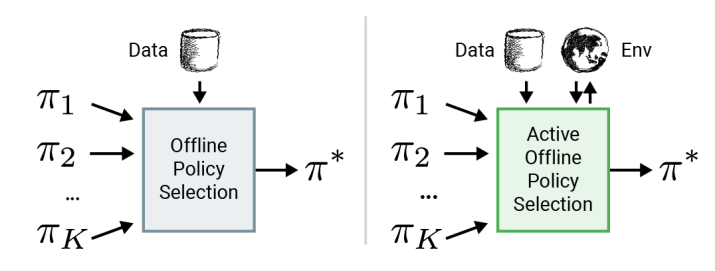

- 저자: Ksenia Konyushkova, Yutian Chen, Tom Le Paine, Caglar Gulcehre, Cosmin Paduraru, Daniel J Mankowitz, Misha Denil, Nando de Freitas
- 발표: NeurIPS 2021
- 논문
- Project Site
- OpenReview
- Code (Tensorflow & Tensorflow Probability)
TL;DR
이 논문에서는 offline rl policy를 로봇이나 추천 시스템과 같은 실제 도메인에 적용시킬 때 최적의 policy를 선택하는 방법에 대한 내용을 담고 있다. 기존에도 Off-policy Evaluation (OPE)에 대한 내용들이 다뤄지고 있었지만, 여전히 OPE에 의한 evaluation과 fully online evaluation간의 gap이 존재하던 것은 사실이다. 이 논문에서는 Active offline policy selection이란 방법을 통해서 offline data와 online interaction을 통해서 지속적으로 best policy를 찾는 방법에 대해서 다룬다. 먼저 OPE estimate을 사용해서 online evalution에 대한 warm start를 수행한 후, policy similarity를 나타내는 kernel을 활용한 Bayesian Optimization 을 통해서 다음으로 evaluate할 policy 를 선택하는 과정을 반복한다.
Introduction

대부분의 offline rl 논문은 simulator에 의존해서 성능을 평가하고 이를 토대로 evaluation을 수행하지만 enviornment와의 interaction에 대한 cost가 큰 실제 환경에서는 이런 training과 evaluation 과정이 제한적일 수 밖에 없다. 이때문에 Offline RL 문제에서는 여러개의 알고리즘과 각각의 hyperparameter의 구성으로 모델을 학습시키고, Figure 1 에 소개되어 있는 것처럼 off-policy policy evalution (OPE)를 통해서 모델을 선택하는 과정을 거치게 된다. 일반적인 online RL처럼 policy evaluation을 하되, 주어진 데이터 내에서 policy evaluation을 수행하는 것인데, 문제는 이 OPE가 어떤 좋은 모델을 고르기에는 정확하지 않다는 것이다. 또한 OPE 자체가 주어진 데이터 내로 한정되어 evaluation을 수행하기 때문에 offline RL이 겪는 distribution shift 문제, 즉 data를 수집할 때 취했던 behavior policy와 실제 학습된 policy간의 차이가 존재하는 문제를 겪게 된다.
그래서 논문에서 제안하는 Active Offline Policy Selection 는 Figure 1 의 두번째 그림에서 소개되고 있는 것처럼 offline data와 소량이긴 하지만 online evaluation 결과를 활용하여 best policy를 찾는 방법에 대한 것이다. 기본적으로는 Bayesian Optimization (BO)을 활용하고, 각 policy별 좋은 정도(논문에서는 expected return을 사용했다.)를 추정하는데 Gaussian Process (GP)를 사용했다. 핵심적인 요소는 딱 두가지가 있는데, 먼저 기존에 알려져있는 OPE 추정치를 환경상에 존재하는 추가적인 noise observation으로 활용해서, 실제로 online evaluation 할때 조금더 GP에 의한 hyperparameter optimization을 쉽게 할 수 있도록 일종의 warm start 역할을 수행하게 한다. 그 다음에 여러 개의 후보군 policy 들 중에서 동일 state에 대한 action을 어떻게 취했는지에 대한 similarity를 나타내는 kernel을 활용해서 모델링을 했고, 이를 통해서 다음ㅇ로 evaluate할 policy를 선택하게 된다. 이를 통해 굳이 실제 환경에서 수행하지 않더라도 best policy를 찾는 근거를 제공하기 때문에 그만큼 데이터 활용에 대한 효율성을 높일 수 있다. 자세한 내용은 다른 파트에서 부연 설명하고자 한다.
Off-policy policy evaluation and selection
보통 Policy Evalutation이라고 하는 것은 policy \(\pi\) 의 가치를 구하는 것을 의미하며, discounted reward에 대한 expected sum을 통해서 계산할 수 있다.
\[ \mu_{\pi} = \mathbb{E}\Big[\sum_{t=0}^{\infty} \gamma^t R(s_t, a_t) \Big], \text{with } s_0 \sim d_0(\cdot), a_t \sim \pi(\cdot|s_t), s_{t+1} \sim T(\cdot|s_t, a_t) \]
Online RL에서는 해당 policy를 주어진 환경에서 직접 수행하면서 \(\mu_{\pi}\) 의 가치를 추정할 수 있지만, offline RL에서는 주어진 데이터만 활용한 OPE 기법을 사용한다. 일반적으로 OPE는 현재 policy가 아닌 별도의 behavior policy \(\pi_{\beta}\) 에 의해서 수집된 trajectory들의 집합 \(\mathcal{D}\) 를 사용해서 value \(\hat{\mu_{\pi}}\) 을 추정한다. 그리고 이어지는 Offline Policy Selection (OPS)을 통해 후보군 policy 들 중에서 가장 좋은 estimated value를 가지는 policy 를 찾는 과정이 이뤄진다. 이렇게 OPE 추정치를 직접적으로 활용하는 방법도 있고, 별도의 quality metric를 정해서 이를 통해서 policy를 선택하는 방법도 있다.